Cazuela de arroz

 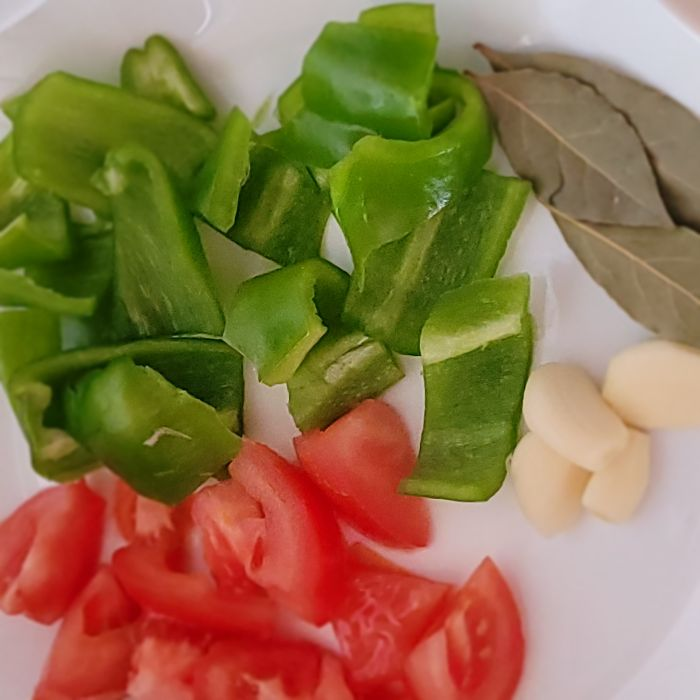
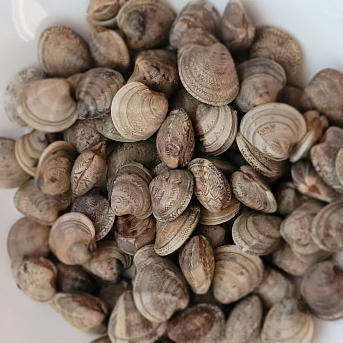
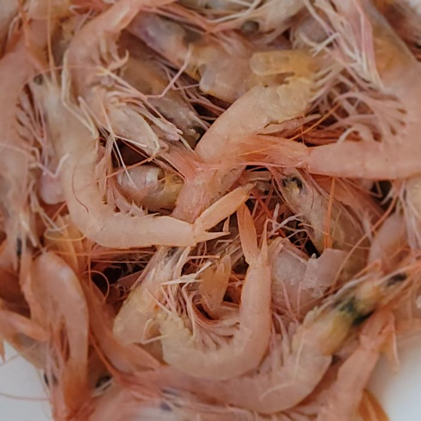
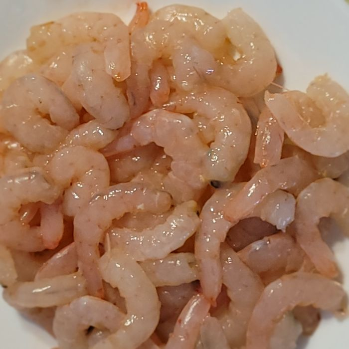
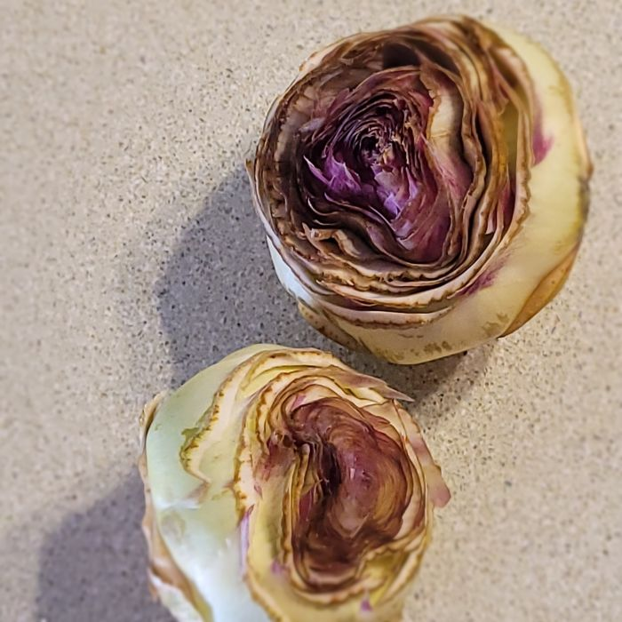
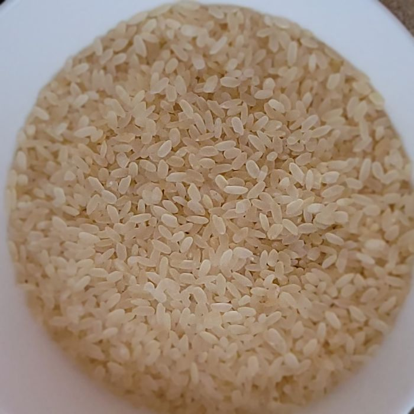
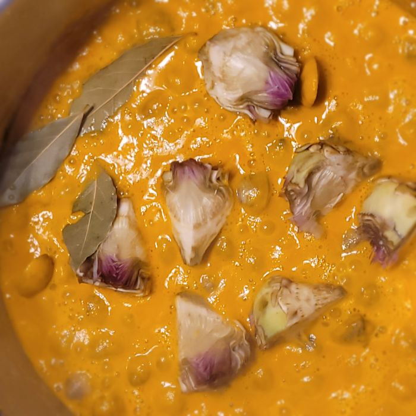
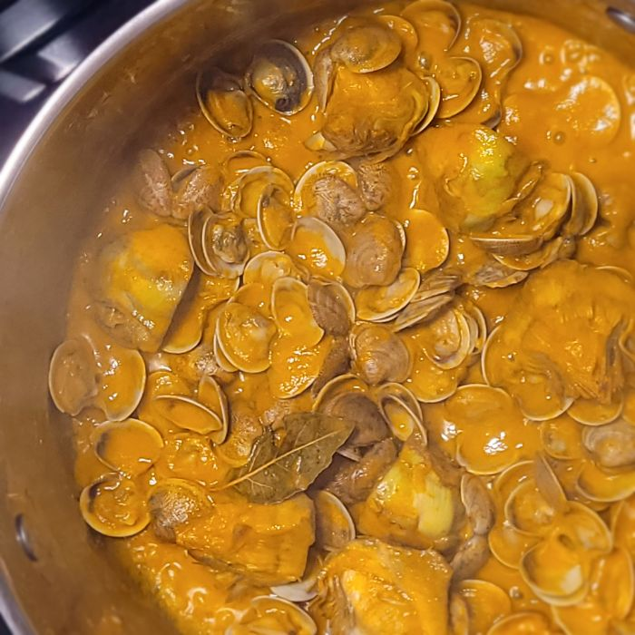
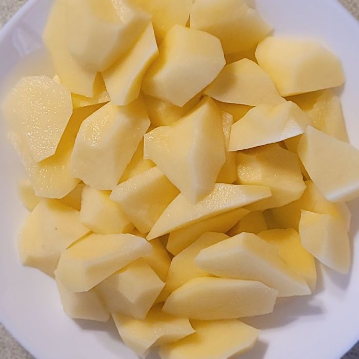
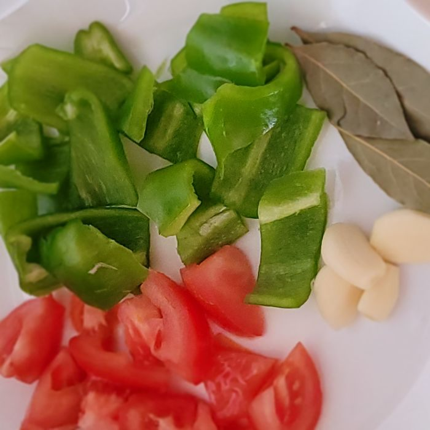
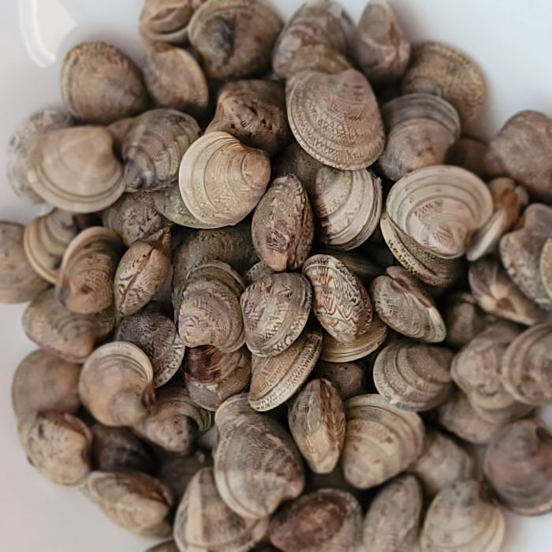
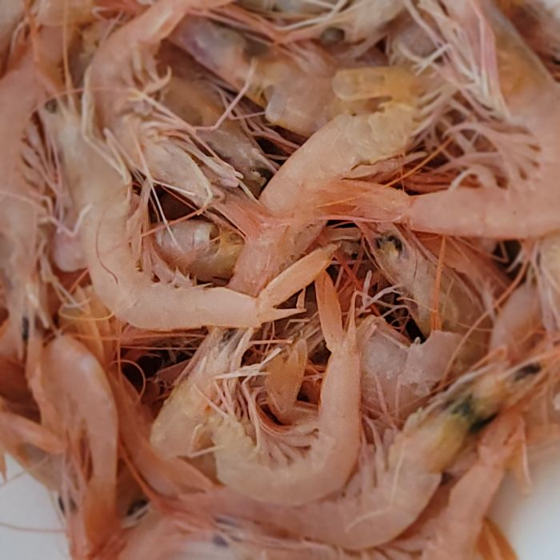
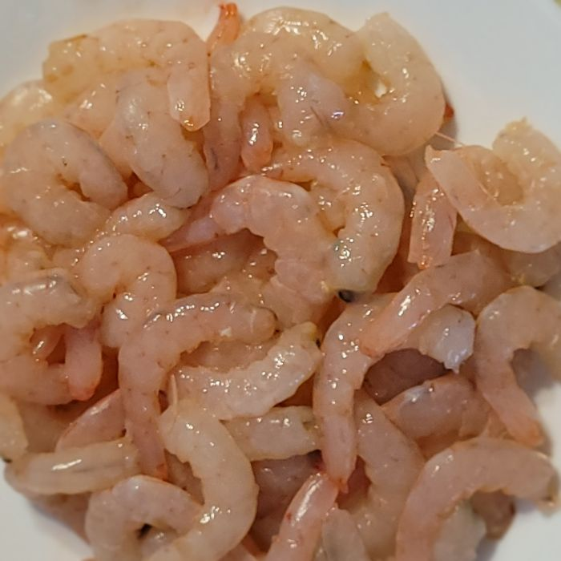
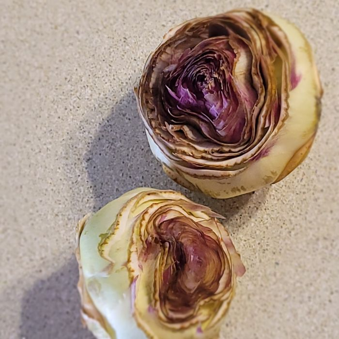
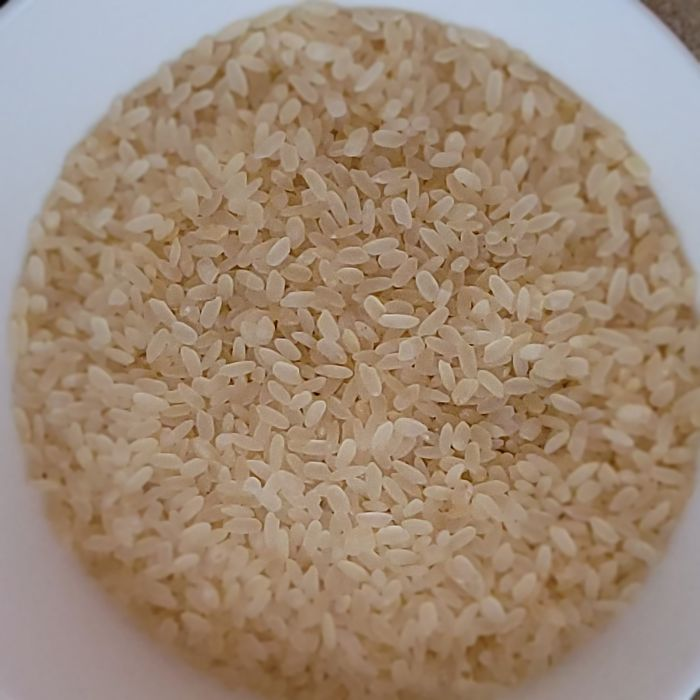
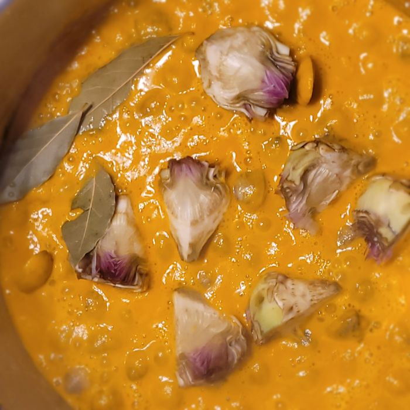
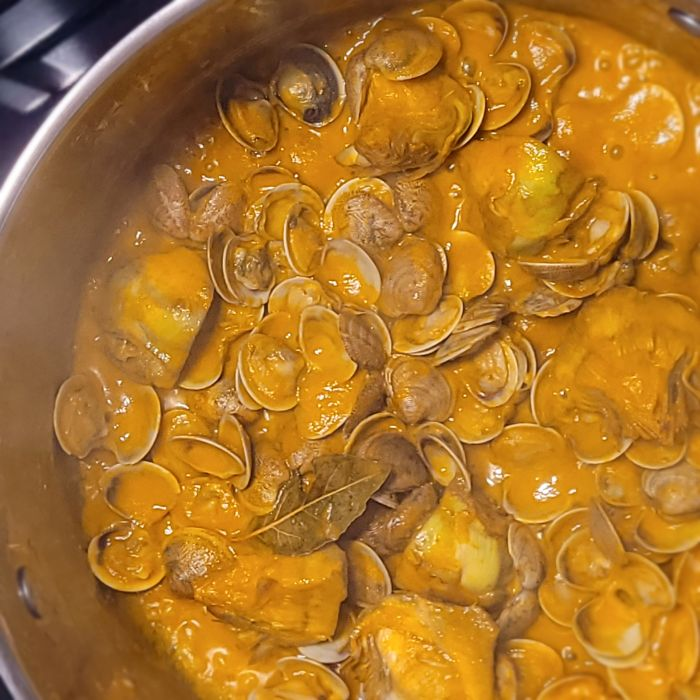
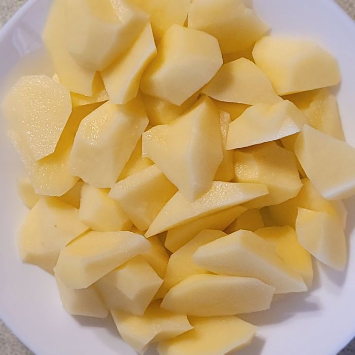
Descripción
La cazuela de arroz o arroz caldoso con marisco o conejo es un plato típico de la comarca del Valle del Guadalhorce, se hace también con fideos, muy típico en zonas rurales de Pizarra y Coín.
Es un plato completo, sabroso y lleno de nutrientes, ideal como comida principal.
Desde el punto de vista nutricional, es un plato equilibrado: el arroz aporta carbohidratos complejos para la energía, las gambas y almejas suministran proteínas de alta calidad, yodo, hierro, zinc y vitamina B12; las verduras (tomate, pimientos, alcachofas) suman fibra, antioxidantes, vitamina C, ácido fólico y potasio. El aceite de oliva y el ajo ofrecen grasas saludables y propiedades antiinflamatorias.
Ingredientes
- Gamba blanca
- ¼ de almejas
- alcachofas (opcional)
- 1 tomate
- 2 pimientos
- 3 dientes de ajo
- Azafrán
- 1 cucharadita de pimiento molido
- Laurel
- 3 patatas medianas
- Unos 200 gr. de arroz
- Aceite
- Sal
- Unos 2 l. de agua
Pasos
- Dejamos las almejas, unos 20 minutos en un recipiente con agua y sal para que suelten la arena.
- En una cacerola ponemos a hervir el agua y las cabezas de las gambas.
- Añadimos un poco de aceite a la cacerola y hacemos el sofrito (tomate, pimiento, ajo).
- Después, un poco antes de apartarlo y a fuego más bajo, se le añade el pimiento molido, dejamos sofriendo sobre 1 minuto.
- Trituramos el sofrito y vertemos nuevamente a la cacerola.
- Enjuagamos las almejas (que ya habrán soltado la arena) y las moreamos un poco junto con el sofrito ya triturado, añadir las alcachofas y el laurel. Mantener unos minutos hirviendo.
- Colar el agua de las gambas y añadir a la cacerola junto al sofrito y las almejas y ponemos a hervir.
- Cuando esté hirviendo todo añadir las patatas troceadas (chascadas) y el azafrán. Añadir el arroz y mantener entre 15 – 20 minutos (lo que indique en el paquete el fabricante).
- Unos 5 minutos antes de apagar el fuego echar las gambas peladas.
Si faltara agua se le echa caliente.
La cazuela de arroz es todo igual que la cazuela de fideos, sólo que al sofrito no se le echa cebolla, se le pone ajo. Y se puede hacer sin patatas.